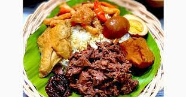
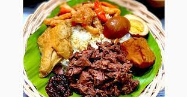

Rendang
Rendang adalah makanan khas Indonesia yang terkenal hingga ke seluruh penjuru dunia. Cita rasanya yang khas membuat banyak orang menyukai rendang.
Percobaan
 

Rendang adalah makanan khas Indonesia yang terkenal hingga ke seluruh penjuru dunia. Cita rasanya yang khas membuat banyak orang menyukai rendang.